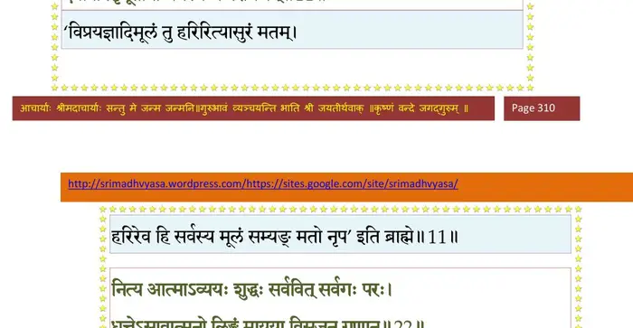
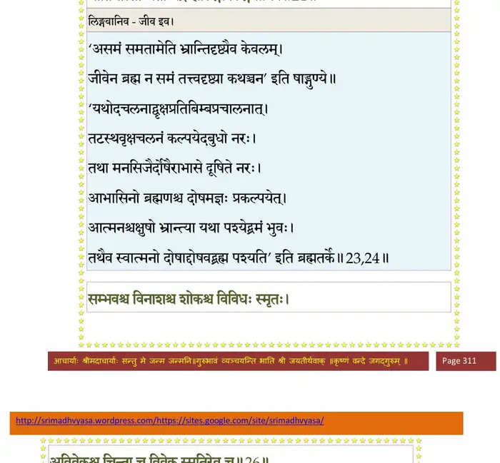
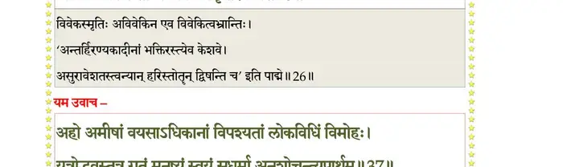
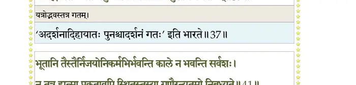
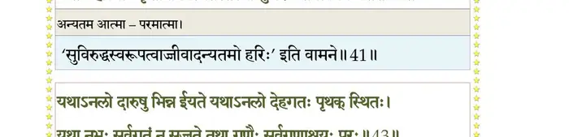
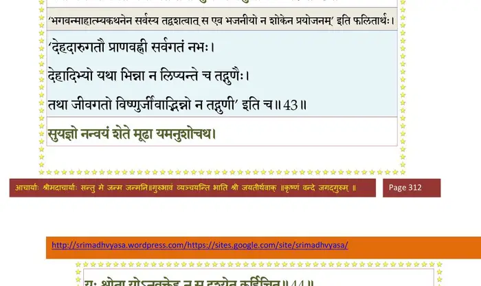
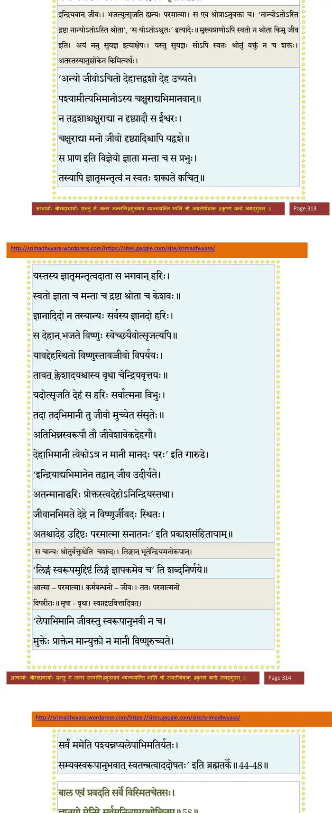
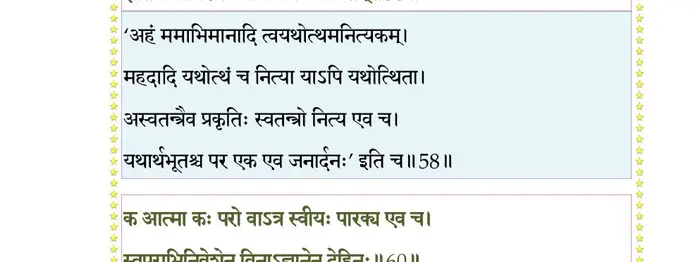
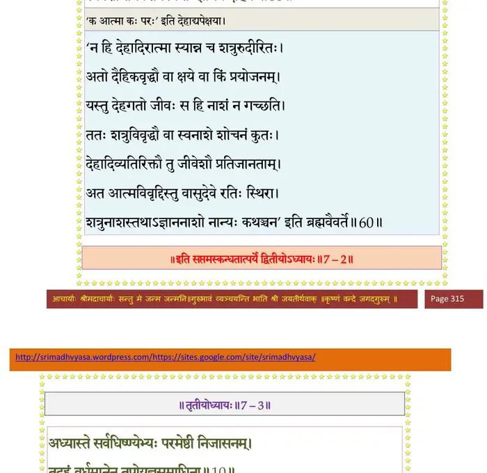

स्कन्ध 7 · अध्याय 2
श्लोक १
नारद उवाच–
भ्रातर्येवं विनिहते हरिणा क्रोडमूर्तिना ।
हिरण्यकशिपू राजन् पर्यतप्यद् रुषा शुचा।। १ ।।
भ्रातर्येवं विनिहते हरिणा क्रोडमूर्तिना ।
हिरण्यकशिपू राजन् पर्यतप्यद् रुषा शुचा।। १ ।।
श्लोक २
आह चेदं रुषा पूर्णः सन्दष्टदशनच्छदः ।
कोपोज्ज्वलाभ्यां चक्षुर्भ्यां निरीक्षन् धूम्रमम्बरम्।। २ ।।
कोपोज्ज्वलाभ्यां चक्षुर्भ्यां निरीक्षन् धूम्रमम्बरम्।। २ ।।
श्लोक ३
करालदंष्ट्रोग्रदृष्ट्या दुष्प्रेक्ष्यभ्रुकुटीमुखः ।
शूलमुद्यम्य सदसि दानवानिदमब्रवीत्।। ३ ।।
शूलमुद्यम्य सदसि दानवानिदमब्रवीत्।। ३ ।।
श्लोक ४
हिरण्यकशिपुरुवाच–
भो भो दानव दैतेय द्विमूर्धंस्त्र्यक्ष शम्बर ।
शतबाहो हयग्रीव नमुचे पाक इल्वल।। ४ ।।
भो भो दानव दैतेय द्विमूर्धंस्त्र्यक्ष शम्बर ।
शतबाहो हयग्रीव नमुचे पाक इल्वल।। ४ ।।
श्लोक ५
विप्रचित्ते मम वचः पुलोमन् शकुनादयः ।
शृृणुताऽनन्तरं सर्वैः क्रियतामाशु मा चिरम्।। ५ ।।
शृृणुताऽनन्तरं सर्वैः क्रियतामाशु मा चिरम्।। ५ ।।
श्लोक ६
सपत्नैर्घातितः क्षुद्रैर्भ्राता मे दयितस्सुहृत् ।
पार्ष्णिग्राहेण हरिणा समेनाप्युपधावनैः।। ६ ।।
पार्ष्णिग्राहेण हरिणा समेनाप्युपधावनैः।। ६ ।।
श्लोक ७
तस्य त्यक्तस्वभावस्य घृणेर्मायावनौकसः ।
भजन्तं भजमानस्य बालस्येवास्थिरात्मनः।। ७ ।।
भजन्तं भजमानस्य बालस्येवास्थिरात्मनः।। ७ ।।
श्लोक ८
मच्छूलभिन्नग्रीवस्य भूरिणा रुधिरेण वै ।
युद्धप्रियं तर्पयिष्ये भ्रातरं मे हतव्यथः।। ८ ।।
युद्धप्रियं तर्पयिष्ये भ्रातरं मे हतव्यथः।। ८ ।।
श्लोक ९
तस्मिन् कूटेऽहिते नष्टे कृन्तमूले वनस्पतौ ।
विटपा इव शुष्यन्ति विष्णुप्राणा दिवौकसः।। ९ ।।
विटपा इव शुष्यन्ति विष्णुप्राणा दिवौकसः।। ९ ।।
श्लोक १०
तावद् यात भुवं यूयं ब्रह्मक्षत्रसमेधिताम् ।
सूदयध्वं तपोयज्ञस्वाध्यायव्रतदानकान्।। १० ।।
सूदयध्वं तपोयज्ञस्वाध्यायव्रतदानकान्।। १० ।।
श्लोक ११
विष्णुर्द्विजक्रियामूलो यज्ञो धर्ममयः पुमान् ।
देवर्षिपितृभूतानां धर्मस्य च परायणम्।। ११ ।।
देवर्षिपितृभूतानां धर्मस्य च परायणम्।। ११ ।।
भागवततात्पर्यनिर्णय

श्लोक १२
यत्र यत्र द्विजा गावो वेदा वर्णाश्रमाः क्रियाः ।
तं तं जनपदं यात सन्दीपयत वृश्चत।। १२ ।।
तं तं जनपदं यात सन्दीपयत वृश्चत।। १२ ।।
श्लोक १३
इति ते भर्तृनिर्देशमादाय शिरसाऽऽदृताः ।
तथा प्रजानां कदनं विदधुः कदनप्रियाः।। १३ ।।
तथा प्रजानां कदनं विदधुः कदनप्रियाः।। १३ ।।
श्लोक १४
पुरग्रामव्रजोद्यानक्षेत्रारामाश्रमाकरान् ।
खेटखर्वटघोषांश्च ददहुः पत्तनानि च।। १४ ।।
खेटखर्वटघोषांश्च ददहुः पत्तनानि च।। १४ ।।
श्लोक १५
केचित् खनित्रैर्बिभिदुः सेतुप्राकारगोपुरान् ।
आजीव्यांश्चिच्छिदुर्वृक्षान् केचित् परशुपाणयः ।
प्रादहञ्छरणानन्ये प्रजानां ज्वलितोल्मुकैः।। १५ ।।
आजीव्यांश्चिच्छिदुर्वृक्षान् केचित् परशुपाणयः ।
प्रादहञ्छरणानन्ये प्रजानां ज्वलितोल्मुकैः।। १५ ।।
श्लोक १६
एवं विप्रकृते लोके दैत्येन्द्रानुचरैर्मुहुः ।
दिवं देवाः परित्यज्य भुवि चेरुरलक्षिताः।। १६ ।।
दिवं देवाः परित्यज्य भुवि चेरुरलक्षिताः।। १६ ।।
श्लोक १७
हिरण्यकशिपुर्भ्रातुः सम्परेतस्य दुःखितः ।
कृत्वा कटोदकादीनि भ्रातृपुत्रानसान्त्वयत्।। १७ ।।
कृत्वा कटोदकादीनि भ्रातृपुत्रानसान्त्वयत्।। १७ ।।
श्लोक १८
शकुनिं शम्बरं धृष्टं भूतसन्तापनं वृकम् ।
कालनेमिं महानाभं हरिश्मश्रुमथोत्कलम्।। १८ ।।
कालनेमिं महानाभं हरिश्मश्रुमथोत्कलम्।। १८ ।।
श्लोक १९
तन्मातरं रुशद्भानुं दितिं च जननीं गिरा ।
श्लक्ष्णया देशकालज्ञ इदमाह जनेश्वर।। १९ ।।
श्लक्ष्णया देशकालज्ञ इदमाह जनेश्वर।। १९ ।।
श्लोक २०
हिरण्यकशिपुरुवाच–
अम्बाम्ब हे वधूः पुत्रा वीरं माऽर्हथ शोचितुम् ।
रिपोरभिमुखे श्लाघ्यः शूराणां वध ईप्सितः।। २० ।।
अम्बाम्ब हे वधूः पुत्रा वीरं माऽर्हथ शोचितुम् ।
रिपोरभिमुखे श्लाघ्यः शूराणां वध ईप्सितः।। २० ।।
श्लोक २१
भूतानामिह संवासः प्रपायामिव सुव्रते ।
दैवेनैकत्र नीतानामुन्नीतानां तथाऽध्रुवः।। २१ ।।
दैवेनैकत्र नीतानामुन्नीतानां तथाऽध्रुवः।। २१ ।।
श्लोक २२
नित्य आत्माऽव्ययः शुद्धः सर्ववित् सर्वगः परः ।
धत्तेऽसावात्मनो लिङ्गं मायया विसृजन् गुणान्।। २२ ।।
धत्तेऽसावात्मनो लिङ्गं मायया विसृजन् गुणान्।। २२ ।।
भागवततात्पर्यनिर्णय
श्लोक २३
यथाऽम्भसा प्रचलता तरवोऽपि चला इव ।
चक्षुषा भ्राम्यमाणेन दृश्यते भ्रमतीव भूः।। २३ ।।
चक्षुषा भ्राम्यमाणेन दृश्यते भ्रमतीव भूः।। २३ ।।
भागवततात्पर्यनिर्णय
श्लोक २४
एवं गुणैर्भ्राम्यमाणे मनस्यविकलः पुमान् ।
याति तत्साम्यतां भद्रे ह्यलिङ्गो लिङ्गवानिव।। २४ ।।
याति तत्साम्यतां भद्रे ह्यलिङ्गो लिङ्गवानिव।। २४ ।।
भागवततात्पर्यनिर्णय

श्लोक २५
एष आत्मविपर्यासो ह्यलिङ्गे लिङ्गभावना ।
एवं प्रियाप्रियैर्योगो वियोगः कर्मसंसृतिः।। २५ ।।
एवं प्रियाप्रियैर्योगो वियोगः कर्मसंसृतिः।। २५ ।।
श्लोक २६
संभवश्च विनाशश्च शोकश्च विविधः स्मृतः ।
अविवेकश्च चिन्ता च विवेकस्मृतिरेव च।। २६ ।।
अविवेकश्च चिन्ता च विवेकस्मृतिरेव च।। २६ ।।
भागवततात्पर्यनिर्णय

श्लोक २७
अत्राप्युदाहरन्तीममितिहासं पुरातनम् ।
यमस्य प्रेतबन्धूनां संवादं तं निबोधत।। २७ ।।
यमस्य प्रेतबन्धूनां संवादं तं निबोधत।। २७ ।।
श्लोक २८
उशीनरेष्वभूद् राजा सुयज्ञ इति विश्रुतः ।
सपत्नैर्निहतो युद्धे ज्ञातयस्तमुपासत।। २८ ।।
सपत्नैर्निहतो युद्धे ज्ञातयस्तमुपासत।। २८ ।।
श्लोक २९
विशीर्णरत्नकवचं विभ्रष्टाभरणस्रजम् ।
शरनिर्भिन्नहृदयं शयानमसृगाविलम्।। २९ ।।
शरनिर्भिन्नहृदयं शयानमसृगाविलम्।। २९ ।।
श्लोक ३०
विकीर्णकेशं स्तब्धाक्षं संरम्भाद् दष्टदच्छदम् ।
रजःकुण्ठमुखाम्भोजं छिन्नायुधभुजं मृधे।। ३० ।।
रजःकुण्ठमुखाम्भोजं छिन्नायुधभुजं मृधे।। ३० ।।
श्लोक ३३
उशीनरेन्द्रं विधिना तथाकृतं पतिं महिष्यः प्रसमीक्ष्य दुःखिताः ।
हताः स्म नाथेति करैरुरो भृशं घ्नन्त्यो मुहुस्तत्पदयोरुपापतन्।। ३३ ।।
हताः स्म नाथेति करैरुरो भृशं घ्नन्त्यो मुहुस्तत्पदयोरुपापतन्।। ३३ ।।
श्लोक ३४
रुदन्त्य उच्चैर्दयिताङ्घ्रिपङ्कजं सिञ्चन्त्य औः कुचकुङ्कुमारुणैः ।
विस्रस्तकेशाभरणाः शुचं नृणां सृजन्त्य आक्रन्दनया विलेपिरे।। ३२
अहो विधात्राऽकरुणेन नः प्रभो भवान् प्रणीतो धिगगोचरं दृशाम् ।
उशीनराणामपि वृत्तिदः पुरा कृतोऽधुना येन शुचां विवर्धनः ।।३३
त्वया कृतज्ञेन वयं महीपते कथं विना स्याम सुहृत्तमेन ।
तत्रानुयानं तव वीर पादयोः शुश्रूषतीनां दिश यत्र यास्यसि।।३४।।
विस्रस्तकेशाभरणाः शुचं नृणां सृजन्त्य आक्रन्दनया विलेपिरे।। ३२
अहो विधात्राऽकरुणेन नः प्रभो भवान् प्रणीतो धिगगोचरं दृशाम् ।
उशीनराणामपि वृत्तिदः पुरा कृतोऽधुना येन शुचां विवर्धनः ।।३३
त्वया कृतज्ञेन वयं महीपते कथं विना स्याम सुहृत्तमेन ।
तत्रानुयानं तव वीर पादयोः शुश्रूषतीनां दिश यत्र यास्यसि।।३४।।
श्लोक ३५
एवं विलपतीनां वै परिगृह्य मृतं पतिम् ।
अनिच्छतीनां निर्हारमर्कोऽस्तं सन्न्यवर्तत।। ३५ ।।
अनिच्छतीनां निर्हारमर्कोऽस्तं सन्न्यवर्तत।। ३५ ।।
श्लोक ३६
तत्र ह प्रेतबन्धूनामाश्रुत्य परिदेवनम् ।
आह तान् बालको भूत्वा यमः स्वयमुपागतः।। ३६ ।।
आह तान् बालको भूत्वा यमः स्वयमुपागतः।। ३६ ।।
श्लोक ३८
यम उवाच–
अहो अमीषां वयसाऽधिकानां विपश्यतां लोकविधिं विमोहः ।
यत्रोद्भवस्तत्र गतं मनुष्यं स्वयं सधर्मा अनुशोचन्त्यपार्थम्।। ३६
अहो वयं धन्यतमा यदत्र त्यक्ताः पितृभ्यां न विचिन्तयामः ।
अभक्ष्यमाणा अबला वृकादिभिः स रक्षिता रक्षति यो हि गर्भे ।।३८।।
अहो अमीषां वयसाऽधिकानां विपश्यतां लोकविधिं विमोहः ।
यत्रोद्भवस्तत्र गतं मनुष्यं स्वयं सधर्मा अनुशोचन्त्यपार्थम्।। ३६
अहो वयं धन्यतमा यदत्र त्यक्ताः पितृभ्यां न विचिन्तयामः ।
अभक्ष्यमाणा अबला वृकादिभिः स रक्षिता रक्षति यो हि गर्भे ।।३८।।
भागवततात्पर्यनिर्णय

श्लोक ३९
य इच्छयेशः सृजतीदमव्ययो य एव रक्षत्यवलुम्पते यः ।
तस्याबलाः क्रीडनमाहुरीशितुश्चराचरं निग्रहसङ्ग्रहे प्रभोः।। ३९ ।।
तस्याबलाः क्रीडनमाहुरीशितुश्चराचरं निग्रहसङ्ग्रहे प्रभोः।। ३९ ।।
श्लोक ४०
पथि च्युतं तिष्ठति दिष्टरक्षितं गृहे स्थितं तद्विहतं विनश्यति ।
जीवत्यनाथोऽपि तदीक्षितो वने गृहेऽपि गुप्तोऽस्य हतो न जीवति।। ४० ।।
जीवत्यनाथोऽपि तदीक्षितो वने गृहेऽपि गुप्तोऽस्य हतो न जीवति।। ४० ।।
श्लोक ४१
भूतानि तैस्तैर्निजयोनिकर्मभिर्भवन्ति काले न भवन्ति सर्वशः ।
न तत्र हात्मा प्रकृतावपि स्थितस्तस्या गुणैरन्यतमो निबध्यते।। ४१ ।।
न तत्र हात्मा प्रकृतावपि स्थितस्तस्या गुणैरन्यतमो निबध्यते।। ४१ ।।
भागवततात्पर्यनिर्णय

श्लोक ४२
इदं शरीरं पुरुषस्य मोहजं यथा पृथग् भौतिकमीयते गृहम् ।
तथोदकैः पार्थिवतैजसैर्जनः कालेन जातो विकृतो विनश्यति।।४२।।
तथोदकैः पार्थिवतैजसैर्जनः कालेन जातो विकृतो विनश्यति।।४२।।
श्लोक ४३
यथाऽनलो दारुषु भिन्न ईयते यथाऽनिलो देहगतः पृथक् स्थितः ।
यथा नभः सर्वगतं न सज्जते तथा गुणैः सर्वगुणाश्रयः परः।।४३।।
यथा नभः सर्वगतं न सज्जते तथा गुणैः सर्वगुणाश्रयः परः।।४३।।
भागवततात्पर्यनिर्णय

श्लोक ४४
सुयज्ञो नन्वयं शेते मूढा यमनुशोचथ ।
यः श्रोता योऽनुवक्तेह न स दृश्येत कर्हिचित्।। ४४ ।।
यः श्रोता योऽनुवक्तेह न स दृश्येत कर्हिचित्।। ४४ ।।
भागवततात्पर्यनिर्णय
श्लोक ४५
न श्रोता नानुवक्ताऽयं मुख्योऽप्यत्र महानसुः ।
यस्त्विहेन्द्रियवानात्मा स चान्यः प्राणदेहयोः।। ४५ ।।
यस्त्विहेन्द्रियवानात्मा स चान्यः प्राणदेहयोः।। ४५ ।।
भागवततात्पर्यनिर्णय
श्लोक ४६
भूतेन्द्रियमनोलिङ्गान् देहानुच्चावचान् विभुः ।
भजत्युत्सृजति ह्यन्यस्तच्चापि स्वेन तेजसा।। ४६ ।।
भजत्युत्सृजति ह्यन्यस्तच्चापि स्वेन तेजसा।। ४६ ।।
भागवततात्पर्यनिर्णय
श्लोक ४७
यावल्लिङ्गान्वितो ह्यात्मा तावत् कर्मनिबन्धनः ।
ततो विपर्ययः क्लेशो मायायोगोऽनुवर्तते।। ४७ ।।
ततो विपर्ययः क्लेशो मायायोगोऽनुवर्तते।। ४७ ।।
श्लोक ४८
वितथाभिनिवेशोऽयं यद्गुणेष्वर्थदृग्वचः ।
यथा मनोरथः स्वप्नः सर्वमैन्द्रियकं मृषा।। ४८ ।।
यथा मनोरथः स्वप्नः सर्वमैन्द्रियकं मृषा।। ४८ ।।
भागवततात्पर्यनिर्णय

श्लोक ४९
अथ नित्यमनित्यं वा नेह शोचन्ति तद्विदः ।
नान्यथा शक्यते कर्तुं स्वभावः शोचतामिति।। ४९ ।।
नान्यथा शक्यते कर्तुं स्वभावः शोचतामिति।। ४९ ।।
श्लोक ५०
लुब्धको विपिने कश्चित् पक्षिणां निर्मितोऽन्तकः ।
वितत्य जालं विदधे तत्र तत्र प्रलोभनम्।। ५० ।।
वितत्य जालं विदधे तत्र तत्र प्रलोभनम्।। ५० ।।
श्लोक ५१
कुलिङ्गमिथुनं तत्र विचरन् समदृश्यत ।
तयोः कुलिङ्गी सहसा लुब्धकेन प्रलोभिता।। ५१ ।।
तयोः कुलिङ्गी सहसा लुब्धकेन प्रलोभिता।। ५१ ।।
श्लोक ५२
साऽसज्जत सिचा तन्त्या महिषी कालयन्त्रिता ।
कुलिङ्गस्तां तथाऽपन्नां निरीक्ष्य भृशदुःखितः।। ५२ ।।
कुलिङ्गस्तां तथाऽपन्नां निरीक्ष्य भृशदुःखितः।। ५२ ।।
श्लोक ५३
स्नेहादकल्पः कृपणां पर्यदेवयदातुरः ।
अहो अकरुणो देवः स्त्रिया कृपणया विभुः।। ५३ ।।
अहो अकरुणो देवः स्त्रिया कृपणया विभुः।। ५३ ।।
श्लोक ५४
कृपणं माऽनुशोचन्त्या दीनया किं करिष्यति ।
कामं नयतु मां देवः किमर्द्धेनात्मनो हि मे।। ५४ ।।
कामं नयतु मां देवः किमर्द्धेनात्मनो हि मे।। ५४ ।।
श्लोक ५५
दीनेन जीवता दुःखं मन्देन विधुरायुषा ।
कथं त्वजातपक्षांस्तान् मातृहीनान् बिभर्म्यहम् ।
मन्दभाग्या प्रतीक्षन्ते नीडे मे मातरं प्रजाः।। ५५ ।।
कथं त्वजातपक्षांस्तान् मातृहीनान् बिभर्म्यहम् ।
मन्दभाग्या प्रतीक्षन्ते नीडे मे मातरं प्रजाः।। ५५ ।।
श्लोक ५६
एवं कुलिङ्गं विरुवन्तमारात् प्रियावियोगातुरमश्रुकण्ठम् ।
तदैव तं शाकुनिकः शरेण विव्याध कालप्रहितो निलीनः ।। ५६ ।।
तदैव तं शाकुनिकः शरेण विव्याध कालप्रहितो निलीनः ।। ५६ ।।
श्लोक ५७
एवं यूयमपश्यन्त्य आत्मापायमबुद्धयः ।
नैनं प्राप्स्यथ शोचन्त्यः पतिं वर्षशतैरपि।। ५७ ।।
नैनं प्राप्स्यथ शोचन्त्यः पतिं वर्षशतैरपि।। ५७ ।।
श्लोक ५८
हिरण्यकशिपुरुवाच–
बाल एवं प्रवदति सर्वे विस्मितचेतसः ।
ज्ञातयो मेनिरे सर्वमनित्यमयथोत्थितम्।। ५८ ।।
बाल एवं प्रवदति सर्वे विस्मितचेतसः ।
ज्ञातयो मेनिरे सर्वमनित्यमयथोत्थितम्।। ५८ ।।
भागवततात्पर्यनिर्णय

श्लोक ५९
यम एतदुपाख्याय तत्रैवान्तरधीयत ।
ज्ञातयोऽपि सुयज्ञस्य चक्रुर्यत् साम्परायिकम् ।
ततः शोचत मा यूयं परं चात्मानमेव च।। ५९ ।।
ज्ञातयोऽपि सुयज्ञस्य चक्रुर्यत् साम्परायिकम् ।
ततः शोचत मा यूयं परं चात्मानमेव च।। ५९ ।।
श्लोक ६०
क आत्मा कः परो वाऽत्र स्वीयः पारक्य एव च ।
स्वपराभिनिवेशेन विनाऽज्ञानेन देहिनः।। ६० ।।
स्वपराभिनिवेशेन विनाऽज्ञानेन देहिनः।। ६० ।।
भागवततात्पर्यनिर्णय

श्लोक ६१
नारद उवाच–
इति दैत्यपतेर्वाक्यं दितिराकर्ण्य सस्नुषा ।
पुत्रशोकं क्षणात् त्यक्त्वा तत्त्वे चित्तमधारयत्।। ६१ ।।
इति दैत्यपतेर्वाक्यं दितिराकर्ण्य सस्नुषा ।
पुत्रशोकं क्षणात् त्यक्त्वा तत्त्वे चित्तमधारयत्।। ६१ ।।
।। इति श्रीमद्भागवते सप्तमस्कन्धे द्वितीयोऽध्यायः ।।